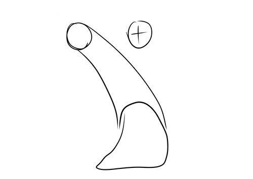

お絵かきのススメ
前書き
初めましての人は、初めまして。私を知ってる人にはこんにちは。一回生プログラム＆マルチ班の「くび」と申すものです。以後お見知りおきを。
この記事では、立ち絵のポーズだけじゃなく少し凝った人物構図を描こう！画力上がるよ多分！ってことを言いたいやつです。
個人的に戦闘シーンの構図が見るのも描くのも大好きで、やってるとわかるんですけどああいうシーンって普通にわけわらん構図が多いんですよ。
だから、練習してると身につくものが大きくためになると思ったので記事にしました。未熟者なりの知識ですが何かの参考になればと思います。
目次
1.一応言っておくこと
少し凝った構図とは
少し凝った構図ってつまりなんだよっていうのはですね、簡単に言うとある部位を目立たせるっていうことです。
遠近をつけたり、フカンやアオリ気味したり、あえて魅せるとこを作ることにより迫力が出ると私は思ってます。例を挙げるとしたらこんな感じです。

ラフなんですが一応描いてきました。一愛眼は単純な遠近の構図、二枚目はフカンの構図を描いています。
なんとなくラフだけでも動きが見えてきませんか？まぁこんな風に人物の動きが強くなります。
練習すると何がいいか
正直こういうめんどくさい構図ってうまくいかないし、だるいので描いてて楽しくはありません。 しかも、無駄に動きがある構図だとキャラが映えないんすよ。わかります。 しかし、練習してると単純に人体に強くなるのでバランスやわけわからんとこが理解してきます。 構図の幅も広がります、踏みつけられている構図とか踏まれてる立場から書きたいじゃないですか。 やってるとそんなんが描けるようになります。ほかにも、普通のポーズとかも取りやすくなると思います。
2.ここから本編
よし！描くか！いざ南無三！っつって遠近のこと調べると、パースを描いてーとかグリッド線でーとかアイレベルを考えてとか3Dモデルを使ってーとかあるんですけど、 下準備が必要でめんどい、描いたところで使い方がわからん、3Dモデルをしたいポーズにできない、寝よ。と、自分はめんどくさがりなのでこうなります。 本当はしっかりやった方がいいんですが一回一回やってたらやっぱだるいし嫌じゃないっすか。 こういうめんどくさいことしないと、理解しないと描けないとかも難しく見える要因だと思うので、 自分のメイキングを描きます。本当に適当なんで、意外と簡単にそれっぽく見えるよってことだけ伝わってもらえるといいです。
メイキング
まず、ラフの構想段階からやります。今回は前に足を出したいと思ったのでとりあえず足を適当に置きます。ついでに、頭の位置も適当に置きます。

ここら辺に置きたいなぁぐらいで考えてます。
そのあとは、身体を付け加えていきす。
まぁ大体でいいです。自分は関節を置いてつなげてを繰り返してます。全体像が見えてきたら遠近、大きさの比を調整してきます。

手前になるほど大きくですがより、ちょっとやりすぎくらいの方が映えると思います。
ぱっと見で差がないとほぼ意味がないので、範囲選択して大きくしたりしてちょうどいいとこ探します。大体ラフ完成です。
ラフをもとに、下書きをします。
自分は一発で描けたことないのでいつも、ここに結構時間かかります。早く描ける人尊敬します。
ここを納得がいくまでやっていきます。遠近がついているので、関節のつながりや肉の重なりを気を付けて微調整をしてきます。これで、下書き完成です。
身体は描き終わったんで、服の下書きを描いて、線画をつくってきます。それを、影つけたりしわつけたり修正したものがこちらです。
色塗りは日和ったので白黒です。すいません。ここはあまり言うことないです。
最後に背景適当につけて完成まです。
ね、かんたんでしょ？
これで最後
色塗りのことを考えると正直あまり難しい構図というものは、映えづらくなってしまうんですが、いつもの絵柄の見えなかった部分が見えてくるのでぜひ練習してほしいです。
あと、色塗りは全然わからんのですけどピント調節や影のつけ方でより際立たせることができると思うので調べてみてください。
こういうものを書くのは初めてだったので、拙い文章であったと思いますが、最後まで読んでくださりありがとうございました。こちらからは以上です。